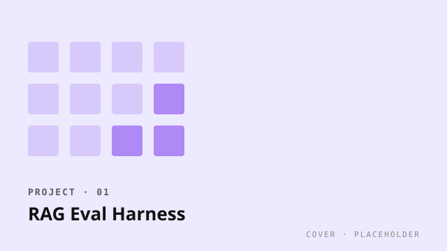

Open source · Eval infrastructure
RAG Eval Harness
A reproducible benchmark suite for retrieval-augmented systems, focused on faithfulness and citation precision. 12 public datasets, judge-model agnostic.

The problem
Most public RAG benchmarks measure whether the right document was retrieved, then declare success. That's the easy half. The hard half is what the model does with the right document — does it actually use it, does it cite correctly, and does it abstain when the document doesn't support the question?
What the harness does
- Wraps 12 retrieval datasets (HotpotQA, MuSiQue, FreshQA, BEIR subsets, four domain-specific corpora I curated) behind one interface.
- Computes faithfulness with span-grounded scoring — every claim in the generated answer must map to a character span in a retrieved document. Hand-waved "supportedness" scores are explicitly excluded.
- Computes citation precision and recall separately. Many systems game citation recall by citing everything.
- Judge-model agnostic — works with OpenAI, Anthropic, local vLLM, or a deterministic rule-based judge.
- Outputs MLflow runs by default, with a Phoenix tracing exporter for span-level inspection.
Numbers, since you'd ask
Currently used by three production teams I know of (one telecom, one fintech, one regulatory). It catches a class of regressions traditional metrics miss — most recently: a 19% drop in citation precision after a prompt-template change that improved ROUGE.
What's next
A non-LLM faithfulness scorer (NLI-based, runs on a 400M-param model) so teams can evaluate every PR without paying per token. That's the chapter I'm writing right now.